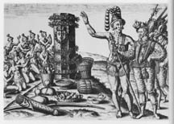
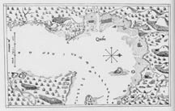
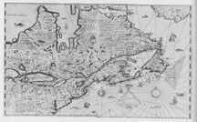
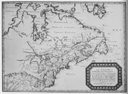
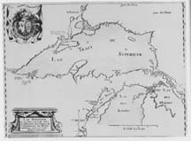
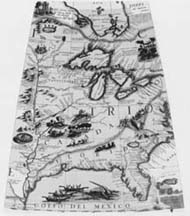
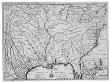

A virtual exhibit based on selections from Buisseret, David. Mapping the French Empire in North America: An Interpretive Guide to the Exhibition Mounted at the Newberry Library on the Occasion of the 17th Annual Conference of the French Colonial Historical Society (Chicago: The Newberry Library, 1991).
In this section we cover the whole of the great crescent stretching from Labrador down the valley of the Saint Lawrence River, into the region of the Great Lakes, and finally down the Mississippi River into the Gulf of Mexico. We have tried to select maps which mark crucial phases in the development of French knowledge of this region, from the early delineations of the Dieppe School, through the extraordinary work of Champlain, down to the great synthesis eventually achieved by Delisle at the beginning of the eighteenth century.As we look at these maps we should reflect especially upon their role in the imperial venture. Just as for the "Indians" of Florida the stone column was to be the symbol of French possession of the land, so for other Europeans the very innovativeness and excellence of French cartographers seemed to give them a sort of claim to the lands that they delineated. Eventually, this claim was seen to be empty, since there was no build-up of population corresponding to the territorial pretensions. But before the political game was finally played out, at Québec in 1759, the maps stand as powerful testimony to the extent of French ambitions.
In 1562 Jean Ribaut of Dieppe led a French expedition to the New World, landing in Florida. Here he set up the column shown in this print, to indicate French claims to ownership. Such columns were often put up in Europe, to mark the boundaries between the possessions of different kings, and so it seemed appropriate to do this in the New World as well.Ribaut left some colonists at Charlesfort, but their settlement did not thrive, and they eventually returned to France in great distress. Two years later, when the religious wars had broken out in France, the Protestant René de Laudonnière led an expedition back to this site, hoping to found a colony. The Indians greeted him in a very friendly way, and took him to the column erected by Ribaut. Our plate shows the Indian chief Athore showing the column to Laudonnière, who is described as being much shorter than the majestic Indian. Indeed, European travellers often noted how tall and well-built the coastal Indians were; no doubt they were much better nourished than most Europeans of that time.Athore points to the column, which other Indians are worshipping as a cult-object, symbol of their alliance with the powerful king of France. The column has been wreathed with flowers; before it lie offerings of fruits and vegetables, a bow and some arrows. We know that this scene is likely to be accurate, because, uniquely for the roughly fifty images engraved by de Bry from this expedition, the original water-color made by Jacques le Moyne de Morgues has been found and closely resembles the engraving. Alas, the settlement founded by Laudonnière was found and destroyed by the Spaniards, so that by the end of the sixteenth century the French had still not succeeded in establishing themselves in North America.
References: Cumming 1971, Hulton and Lorant.
After the failure of the Florida Venture, there were no fresh attempts to found a French colony in North America until around 1600. Then king Henri IV (1589-1610), having put an end to the religious wars in 1598, turned his attention to overseas ventures. In 1603 he sent Samuel de Champlain on an expedition to the Saint Lawrence River valley, and from this time onwards Champlain steadily increased French knowledge of the area.After the 1603 expedition, he went back again from 1604 to 1607, and in 1608 founded the settlement at Québec, seen on our plate. This comes from Les Voyages du Sieur de Champlain, published at Paris in 1613, and plentifully illustrated with maps like this one. The "pointe de Quebecq, ainsi appellé des sauvages" stuck out into the Saint Lawrence River at a strategic point; here Champlain built his quarters, or "habitation," at "A" on the map. At "B" he caused the ground to be plowed and sown with wheat; there were gardens round the quarters at "C."Champlain carefully noted the site's other attractions. At "X," top left, was a running stream, "good for water-mills." At "T" were marshes flooded at high tide; here fish nets like the ones shown could be set, and waterfowl could be shot, as on the engraving. "9" marks the area where the Indians often made their camp, some way removed from Champlain's site; here may be seen a longhouse. It was under Champlain's direction that the French began to learn how to survive the Canadian winters. He was skillful not only at identifying suitable food-crops, drink and medicine, but also at keeping the men's spirits up by giving them appropriate tasks and diversions, so as to get them through the long dark winter.
References: Champlain 1613, Heidenreich 1976 and Trudel 1968.
By 1632, Champlain had considerably extended his knowledge, as this map shows. To the north, he could now show Hudson Bay; this was not based on his own travels, but much of the rest of the new information was. In the west he has sketched in Lake Ontario and Lake Huron; the "grand lac" to the west may be Lake Michigan or Lake Superior. There are numerous "saults," or falls, on the Saint Lawrence River between the town of "Trois Rivières" and the entrance to the "Lac Saint Louis" (Lake Ontario). Here and there Champlain inserts notes from his observations; north of Lake Ontario, for instance, is a "place where there are many deer," and north of Lake Huron is the "place where the Indians dry their berries each year." Just to the west of this is the "island where there is a copper mine," while away to the south is the "nation where there are many buffalo." Champlain's achievement, in charting this vast region for France, was a triumph both of persistence and of skill, perhaps using techniques taught in some Jesuit high school, where cartography occupied a prominent place in the curriculum. He mapped with such accuracy that we can still easily identify what he was trying to describe, even when, as in his earlier work, he was only showing some small port on the Atlantic coast. His work gave the French Crown knowledge about - and claims over - an immense area pointing into the heartland of North America, and so set it upon a track that it would follow for many years to come.
References: Heidenreich 1976 and Trudel 1968. Return to top of page
Unlike the cartographers whose maps we have been considering up until now, Nicolas Sanson had not visited the site in person, but remained in Paris, where he was Géographe du Roi, receiving cartographic reports and combining them together into maps which eventually covered most parts of the world. This map, as he says in the cartouche, thus relied for its northerly information on the English and Danes, and for its delineation of the lower Atlantic coast on the English and Dutch; it was only for the "Grande Riviere de Canada," or Saint Lawrence, that French sources were preferred. The five Great Lakes are all now shown, though Lakes Ontario ("de St. Louys") and Erie ("Du Chat") still have their alternative names. Lake Superior is shown only at its eastern end, there being still no reliable information about its extent. Lake Michigan is even less well served, for Sanson is able to show only a fragmentary "Lac de Puans," the name which eventually became attached to what is now Green Bay in Wisconsin. The area round Hudson Bay is well shown, with a wealth of place-names that belied its eventual relative insignificance. Sanson also had reliable information about the English settlement in Virginia, but he was less sure about the line of what he calls the "Apalatcy Montes," or Appalachian Mountains, in the lower left corner. He shows these as running roughly east-west, instead of north-south, and as joining up with what looks like an extension of the Ozarks. Together they form a more or less impenetrable barrier between the Great Lakes area and the Gulf of Mexico; there was as yet no realization that a mighty river drained this whole central area and ran from the borders of Canada right down into the Gulf.
Reference: Kaufman
This map, attributed to the Jesuit fathers Jean Allouez and Claude Dablon, marks a sharp improvement in European knowledge of the western Great Lakes, including not only the complex intersection of Lakes Superior, Huron and Michigan, but also the outline of Lake Superior. It was published in France as part of the Jesuit Relations, by which the men in the field kept their superiors informed about the latest developments. As its title implies, this is primarily a mission map, on which the westward progress of the Jesuits is carefully charted. At the Sault, on the eastern end of Lake Superior, is now the "Mission du Sainte Marie." At the extreme western end of the lake is the "Mission du Saint Esprit," with the "Mission de Saint Ignace" at the junction of Lakes Huron and Michigan ("Lac des Illinois"). The "Baye des Puans" is here reduced to its correct size, and the "Mission de Saint François Xavier" is shown near Green Bay. There is a scale of leagues, and an altogether remarkable sense of restraint; not knowing the correct outline of the southern shore of Lake Michigan, the cartographers have omitted it. The arms of France and of Navarre in the top left-hand corner remind us of the close alliance between church and state in seventeenth-century France. The reign of Louis XIV was a great period for French cartography, when mapping really became a prime tool in the royal administration. Many of the great cartographers had been formed in the Jesuit schools, just one instance of the way in which the church helped the state, while the state protected and fostered the church.
Reference: Karrow
Coronelli was a Franciscan priest and a most prolific cartographer, publishing over four hundred maps from his convent in Venice. In 1680 he was commissioned to produce a huge pair of globes (terrestrial and celestial), fifteen feet in diameter. They were completed in 1685 and presented to king Louis XIV; they still survive at Versailles. The gore shown here is part of a 42-inch globe, for which the gores were published in 1688; some of these large globes survive in Italian institutions. It shows the central part of North America, and in particular records the feat of René-Robert Cavalier, sieur de la Salle, who in 1682 travelled right down the Mississippi River and emerged in the Gulf of Mexico. Whether by mistake or, as some have argued, by design, he plotted the mouth of the Mississippi as lying about four hundred miles west of where it actually is, and this error is well shown on Coronelli's map.As a consequence of this error, the Illinois and Wisconsin Rivers are shown as being far longer than they are. But the general outline of the Great Lakes has now been well established, and Coronelli's Italian notes offer us much information about the Indian tribes of the region. With a globe made up of gores like this, Louis XIV's imperial strategy rested on a relatively sound geographical basis.
Reference: Cumming 1974, Naissance and Coronelli.
As a cartographer, Delisle was rather like Coronelli and Sanson; he did not personally inspect the numerous sites that he mapped, but rather became a master at reconciling the information coming in from all over the world. This version of central North America shows the area as the French knew it at the time of their greatest political power. The course of the Mississippi River has been radically corrected from the one shown on maps 9 and 10, and its mouths are well shown; as we shall see, it was about this time that the French began to settle that area. Florida and the Rocky Mountains are shown rather inaccurately, but these were not regions of French settlement during the eighteenth century.The map relied largely on French sources, and indeed is vigorous in pressing French territorial claims. "La Louisiane" runs westward almost to the foothills of the Rocky Mountains, and eastward to the western slope of the Appalachians. In fact, French settlement never comprehended much more than a tenuous string of settlements along the Mississippi River valley. But it is easy to see how maps like this could arouse resentment from the Spaniards in the west, and the English colonies in the east; the ensuing war was at first fought only on maps, but later on the ground. The detailed insert on this map is particularly interesting, as it catches the development of Lower Louisiana at an early stage. New Orleans is not yet shown, but the forts at Mobile and Biloxi do appear, as does the Spanish settlement at Pensacola. We shall look at this area of French settlement more closely in the fourth section of this exhibition.
Reference: Cumming 1974